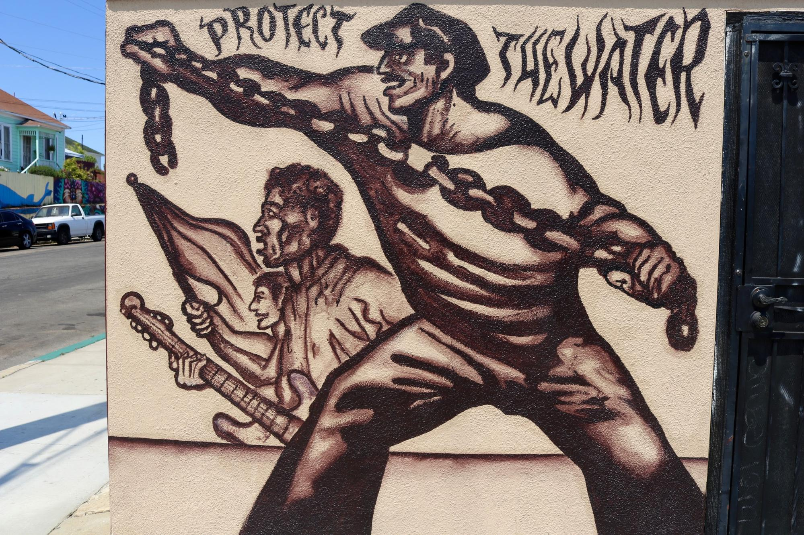

Summary: Because sixty to seventy percent of Barrio Logan residents live below the poverty line, many residents often must forgo paying electricity and water bills in lieu of paying for more pressing costs such as rent, food, and transportation. Considering that Barrio Logan also has three times the national rate of pediatric asthma incidence, community residents face a compounded public health issue of asthma susceptibility and unreliable access to electricity for needed respiratory medical devices.

Industrial Pollution and Asthma
Barrio Logan, CA: a colorful Chicano neighborhood known for its wealth of activism, art, and cultural influence. Perhaps less known is the documented emission of environmental toxins from ship building yards, recycling centers, auto body shops, and manufacturing plants right next to residential neighborhoods and schools—or the fact that Barrio Logan has been featured in public health textbooks, EPA case studies, and environmental risk maps by the Office of Environmental Health Hazard Assessment as one of the most toxic hotspots in nation due to the detrimental urban zoning of nearby industries and truck-heavy traffic.
A first person perspective of a pier adjacent to shipyards and a playground.
Many are taken aback when they discover that a community just twenty minutes from La Jolla, one of the most affluent neighborhoods in the country, has a pediatric asthma rate that is three times the national average, a respiratory health hazard index that is 100-200x above the acceptable national average, and one of the highest occurrences of asthma-related hospitalizations in San Diego County.
This is an interactive geospatial visualization of asthma cases in various San Diego Neighborhoods. Zoom or select the buttons in the visualization to explore more about the issue. Created by IHPSD Data Visualization Team members Megan Chang and Anamaria Ancheta.
When speaking with residents of Barrio Logan about the issue, several mentioned growing up with asthma or knowing someone had asthma since they were a child, as well as the lack of community organizing that had been done around the issue.
A young girl wanders around the pollutant-heavy shipyards adjacent to Cesar Chavez Park in Barrio Logan, CA. Young children are more vulnerable to chronic asthma than adults.

A walk through the murals of Chicano park depicting plummets of thick toxic liquids emitting from industries surrounding the Coronado Bridge quickly shed light on the fact that respiratory hazards are not something new for the community.
Local Clinical Perspectives: Pediatric and Geriatric Vulnerability to Asthma
Curious if local health clinics had any insight on the issue, I headed to Logan Heights Family Clinic and spoke with Dr. Heather Smith, the associate clinical director of the bustling community health center.
Dr. Smith informed me that that clinic saw 300-500 patients per day who were predominantly Latino community members, and that the clinic treated a considerable amount of pediatric and geriatric patients.
In a discussion with Dr. Smith, I discovered that the manifestations of the airborne pollutants on the young and elderly in the community were severe. “Everyday, I’d say I see about 6-7 children or older community members come in with moderate to severe asthma problems, in need of nebulizers [respiratory medical devices]. It’s pretty bad in this region.” When I asked Dr. Smith about other public health related concerns in the area from a clinical perspective, she expressed that a common issue was lack of hygiene or access to proper hygiene related resources in the community that generally help individuals avoid sickness. However, Dr. Smith informed me that the extent of her knowledge about these region-specific issues was what she had already discussed with me.
Curious about the community perspective on the public health issues Dr. Smith had mentioned, I visited a local service worker’s collective, Western Service Workers Association (WSWA), to gain more insight into the issue and see if there was current work being done in the community regarding the issue.
Community Perspectives: Utility Cuts, Public Health Hazards, and Child Protection Services
Juan Mena, a twenty year resident of Barrio Logan, shares a few of the impacts that unreliable access to utilities has on the community.
As mentioned by Mr. Mena, electricity shortages result in defunct refrigerators and stoves (and consequently, a lack of means to store or cook perishable foods), a lack of air conditioning during hot summers, and unusable electricity-dependant medical devices.
Brandon, the director of WSWA, also mentioned the community’s struggle to gain sustained access to water. “Every year, about 24,000 homes in San Diego have they water shut off because of financial difficulty—shutoffs range from a few days to a few weeks at a time,” he stated. Diminished access to water increases the risk of contracting communicable disease and poses respiratory health issues due to standing sewage in households.
A mural near WSWA in Barrio Logan depicts the area’s long fight for water.
WSWA volunteer coordinator, Elena Sanchez, mentions that aside from the health related hazards, there are serious implications for low-income families if there is frequent inability to pay for utilities. “Just a few weeks ago, a woman came in here [to WSWA] saying that she came home to find her house tagged with red slips after having her electricity shut off for over two weeks. Days later, she told us that the Child Protection Services had informed her that she needed to pay for utilities, or else her children could be taken away from her because of ‘child neglect.’ As a single mother, she was so scared to lose her family,” Sanchez discloses.
Synthesizing Perspectives: A Critically Compounded Health Issue
Although the electricity and water cuts are frequent, it is difficult to find data on the extent of the issue because community members often perceive inaccessibility to utilities as a mere product of their own financial circumstances rather than a community-wide social issue, and thus don’t have an impetus or means to report it. However, considering the history of environmental racism in Barrio Logan and its subsequent effects on respiratory health, there is a grave compounded public health issue when the community heavily relies on respiratory medical devices for local pollutant-induced asthma everyday, yet there is unreliable electricity access to power these medical devices. Furthermore, the community’s lack of reliable access to water could explain the issue Dr. Smith had mentioned regarding the community’s difficulty in accessing hygiene related resources.
Although the residents of Barrio Logan are unfortunate in experiencing multi-layered issues that affect their well being, they are a resilient community with deep roots in community organizing and action against these very issues.
What are we doing about it and how can YOU get involved?
The IHPSD in Action Team is partnering with the Western Service Workers Association, a local service worker’s collective, to create a reusable emergency energy source that will support respiratory medical devices for Barrio Logan residents during power shut offs. We are currently partnering with community mechanics to explore the reusability of old car batteries paired with solar panels as sources of energy for these devices. To get involved, click ‘With IHPSD’ in the action bar on the left.
What is the community doing about it and how can YOU get involved?
WSWA, a community collective comprised solely of community members dedicated to providing resources to the community and creating systematic change, is raising awareness about local issues. Get involved by clicking ‘With Community’ in the action bar on the left.